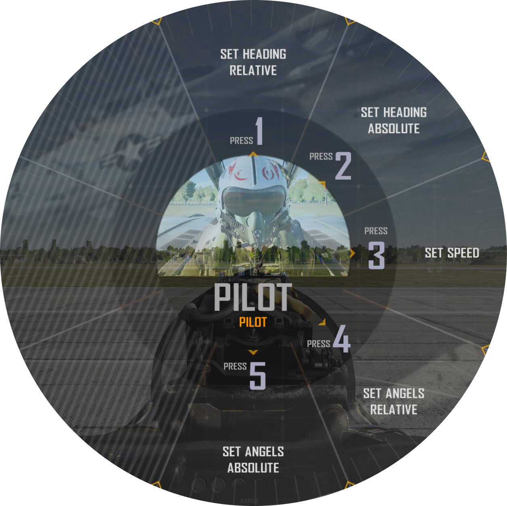

DCS 特定功能¶
Jester¶
Jester AI 的目标是为 Heatblur DCS F-14B 打造一个 AI 雷达拦截官（即 RIO），便于玩家能够在单人（单人单架飞机）的环境下享受双人协作驾驶的快感。
Jester 被完全集成进了后座驾驶舱，他需要控制后座驾驶舱内几乎所有的航电，特别是那些前座飞行员无法操作的系统。我们为 Jester 构建模型时，还考虑了到一名真正人类 RIO 的局限性，也就是说，除了各种各样的限制因素外，RIO 当前头部位置，目视搜索范围以及他的手在操作什么——Jester AI 的人类行为模型充分考虑到了这些因素。Jester AI 能够像人类一样坐在 RIO 座位上控制所有系统，执行各种各样的操作。
玩家可以通过一个环形选单快速访问并选择 Jester 的命令/控制。该选单中的内容会根据当前所处的模式和目前的状况进行动态的调整。Jester 的反馈会调用语音库中的语句并通过内话系统（ICS）传递给玩家，以此模拟与 RIO 交流的真实体验，而且，除了确认指令外，Jester 还会根据当前的情况向飞行员传达相关信息。
最后，在多人游戏中，作为 RIO 加入的玩家会发现，加入时所有的控制（例如：开关的位置等）都处在 Jester 离开前操作的位置上，同理，若玩家 RIO 离开，Jester 也会按照玩家所留下的设置来接手 RIO 的工作。
功能¶
在默认设置下，按下 A 来调出 Jester 菜单，通过 CTRL + 1 到 8 选择其中的项目（1到8）。这些按键命令可以被更改或是设置到控制器上。玩家可以在 DCS 按键设置中选择 F-14 飞行员分类并在 Jester 子条目下找到上述按键设定。按花瓣状的菜单子选项使得它们可以被轻松设定对应游戏控制器的八向苦力帽位置。此外，玩家可以通过按住 Jester 菜单按键超过 0.5 秒，然后通过转动驾驶舱视角的方式来选择环形选单中的某个选项。这个功能可以在 F-14B 的专用设置中启用或禁用。
上图是 Jester 主菜单。菜单中包含了所有可用的不同子菜单。选择 Jester 菜单的第一个选项通常会进入到下一个子菜单中，子菜单的内容会由飞机目前的模式和状态所决定。例如，在空中选择空对空模式时，玩家直接被引导至 超视距 - 雷达 菜单，而在空中选择空对地模式时，则会进入 空对地 - 武器 页面。此外，起飞和着陆模式也有各自对应的、且只能在这些模式下启用的子菜单。
按下 Jester 菜单按键并进入与当前模式相关子菜单页面后，再一次按下同样的按键后将返回 Jester 主菜单，如此一来便可选择根据模式自动关联的子菜单以外的其他菜单选项。
连续按下 Jester 菜单按键（默认按键 A）后的正常显示序列是： 菜单关闭 -> 依据模式和情况关联的子菜单 -> 主菜单 -> 菜单关闭。
通过这些菜单便使得玩家能够控制 RIO 驾驶舱中的诸多系统成为了可能。不同子菜单的内容可能会根据之前的指令而发生变化，并且某些系统使用环形选单中的选项作为输入/数字键盘在对应系统中设置频率或是其他数值。
例如，我们可以通过用这样的方式和 Jester 沟通让他向导航系统中输入一个航路点坐标。但是这需要大量连续而繁琐的按键。在这种情况下，作为捷径，我们可以让 Jester 从 F10 地图中设置的地图标记中输入一个导航点。在这种情况下，为了帮助玩家选择标记，菜单将显示自标记创建后经过的时间以及标记点的名称。
如果某个系统中需要选择一个特定符号，例如，用 STT 锁定 TID 上的一个目标，飞行员可以通过菜单命令 Jester 锁定距离最近的目标或是距离最近的敌方目标等。除此之外，还可以用方位/距离系统向 Jester 指定特定的符号/跟踪目标。
最后， Jester 同样能够帮你读出启动检查单，引导飞行员完成冷启动，下文中详细介绍了这个协助启动功能。
Iceman¶
除了 Jester ，或者说，作为 Jester AI 的一部分， Heatblur DCS F-14B 同样实现了 Iceman ，一个基础的自动驾驶仪/AI 。这适用于单人模式，当玩家在前后座之间跳转以同时控制两个驾驶舱内的系统时，这个基本的自动驾驶仪就会激活，并使用与 Jester 相同的控制方法。
我们所说的基础功能是指，当玩家切换到后舱 RIO 的座位时， Iceman 将获取控制权，保持飞机当前的航向和高度。通过菜单——现在是 Iceman 菜单了——玩家可以设置航向、高度和速度。航向和高度可以相对某个目标进行设定，也可以设定为不参考任何外部目标的绝对值。
协助启动¶
冷启动飞机时， Jester 可以像一名真正的 RIO 一样执行他的检查单，也可以帮助飞行员进行协助启动。在协助启动中， Jester 会向你朗读飞行员的检查单。
如需执行常规的，无协助的启动，选择启动， Jester 将执行他的检查单。他有时候会询问飞行员是否完成了某些检查或是要求进行具体的测试，这可以通过 Jester 菜单中的选项来回复。举例，他会首先要求进行通讯检查，这便需要用到 Jester 菜单了。注意，在完成发动机启动和 EMERG GEN 测试之后他将会询问使用何种方式进行 INS 对准，这同样也是通过 Jester 菜单来选择的。
若需执行协助启动，在 Jester 菜单上选择协助启动。在启动过程中 Jester 将会像飞行员读出检查单并提醒飞行员有哪些相关的指示和开关。当检查/步骤完成后使用 Jester 菜单来通知 Jester 操作已完成。
DCS F-14 专用设置选项¶
Heatblur DCS F-14 将拥有仅影响 F-14 的专用设置和选项，这些选项位于 DCS 主菜单下的 选项 -> 专用设置 -> F-14B 页面。
可用的选项包括：
控制 |
功能 |
|---|---|
无线电菜单和按键通话行为 |
设定无线电按下送话按钮影响 DCS 无线电菜单的方式。若使用 PTT 按钮进行 SRS 通讯该设置将非常有用。 |
Jester AI 选项 |
|
使用头部移动进行 Jester 菜单选择 |
允许使用 VR 或 Track-IR 通过头部移动来选择 Jester 菜单中的条目。 |
无聊的 Jester |
禁用 Jester 的润色和笑话。未实装。 |
视距内空战以 P-STT 锁定而不是 PD-STT |
进入格斗射程后 Jester 会自动将雷达切换至 P-STT 模式。 |
Jester 菜单摄像头 |
在 Jester 菜单上启用或禁用 Jester 镜头。 |
Heatblur DCS F-14 任务编辑器相关功能¶
F-14 在 DCS 的任务编辑器中有特殊的选项和航路点设置可用。
当设置含有 F-14 的飞机群组时，可在飞机页面下的附加属性页面下设置飞机的特殊选项。
除去航路点 1 到 3 和基地，其余的航路点可以通过导航目标点页面进行设置。该页面在设置包含 F-14 的群组时可用。
Heatblur DCS F-14 任务编辑器专用选项¶
选项 |
对应设置选项 |
|---|---|
M-61 机炮连发模式 |
设定 M-61 最大连射长度，设为手动将使机炮持续开火至弹药耗尽。 |
AN/ALE-39 装填 |
设置 AN/ALE-39 对抗措施布撒器的装填。 |
以箔条填充 LAU-138 |
设定在飞机重生时是否用箔条填装 LAU-138 挂架布撒器。 |
预存 INS 参考对准 |
设定在飞机重生时 INS 系统中是否预存参考对准。 |
塔康频道预选（0 = 自动） |
设定飞机重生时预先选择好的 TACAN 波道。0 将设置为重生时最近的塔康台。 |
塔康波段 |
设定飞机重生时预先选择好的 TACAN 波段。 X 或 Y 。 |
ILS 波道预选 |
设定飞机重生时预设的 ICLS 波道。 |
KY-28 加密密钥 |
设定飞机重生时 KY-28 所加载的加密密钥。 |
激光编码 第一位至第四位 |
设定飞机重生时已经挂载好的激光制导武器的预设激光编码。 |
任务编辑器 F-14 航路点选项¶
由于 F-14 的导航系统只有三个拥有编号的航路点，因此其他大多数航路点都是通过导航目标点来设置。
航路点 1 到 3 各自对应了任务编辑器中的航路点 1 到 3。
通过设置一个着陆点来设置 Home Base（基地）。
而其余的则是通过创建并命名导航目标点来设置，如下表所示。
航路点 |
设定的航路点名称 |
|---|---|
固定点 |
FP |
起始点 |
IP |
地面/水面目标 |
ST |
防御目标点 |
DP |
敌对区域 |
HA |
数据链路航路点 1 到 3 |
DLWP1、 DLWP2 和 DLWP3 |
数据链路地面/水面目标 |
DLST |
数据链路固定点 |
DLFP |